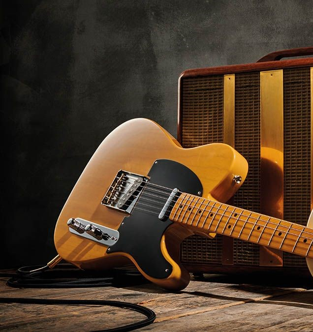

Гитары Фендер
Компания «Fender Musical Instruments Corporation» основана Лео Фендером (Clarence «Leo» Fender) в Калифорнии в 1946 году.В 1950 году была выпущена электрогитара Fender Esquire с одним звукоснимателем. На основе этой гитары в 1951 году разработана Fender Broadcaster с двумя звукоснимателями. Эта гитара была переименована в Telecaster и сегодня является одной из самых популярных гитар среди профессиональных музыкантов.
Стратокастер
Fender Stratocaster (или Strat) — модель электрогитары, разработанной Джорджем Фуллертоном, Лео Фендером и Фредди Таваресом в 1954 году и выпускаемой вплоть до настоящего времени. Stratocaster использовался многими гитаристами, и поэтому её можно услышать на многих исторических записях. Наряду с Gibson Les Paul, Gibson SG и Fender Telecaster является одной из самых известных и распространённых моделей электрогитар в мире.
Stratocaster очень широко копируется, в результате чего название «Stratocaster» или «Strat» часто используют для обозначения любой гитары с теми же техническими особенностями, независимо от производителя.
Телекастер
Fender Telecaster — электрогитара со сплошным корпусом и двумя звукоснимателями, изготовленная компанией Fender. Её простая, но эффективная конструкция и революционное звучание задали новые направления в изготовлении электрогитар и популярной музыке.
Представленная для распространения как Broadcaster осенью 1949 г., это была первая гитара подобного рода, производившаяся в значительных масштабах. Начало её коммерческого производства может быть отнесено к весне 1950 г., когда модели Fender Esquire появились в продаже. С тех самых пор и по настоящее время не прекращается производство Telecaster в той или иной форме, что делает её одной из основных в мире электрогитар со сплошным корпусом.
Одним из первых музыкантов, использовавших Telecaster (в то время называвшийся Broadcaster) был Артур Смит, записавший с его помощью «Guitar Boogie» в 1947 г.
Выпуск Esquire был возобновлён в качестве Telecaster с одним звукоснимателем, и эти гитары продавались по более низкой цене.
Джазмастер
Fender Jazzmaster — модель электрогитары, разработанная в 1958 году и выпускаемая до сих пор. Одна из особенностей данного инструмента заключается в возможности работы в 2-х режимах — «lead» и «rhythm».
В 1962 году на основе Fender Jazzmaster была разработана модель Fender Jaguar. В конце 1970-х гг. производство Jazzmaster было приостановлено, но было возобновлено в середине 1980-х гг. Выпускается в США, Японии и Мексике.
Усилители
Blues Junior - это ламповый гитарный усилитель , представленный в 1990 году компанией Fender Musical Instrument Corporation .
Он нацелен на достижение теплого лампового тона, характерного для многих стилей американского блюза и блюз-рока , восходящих к 1950-м годам, при этом оставаясь портативным и доступным. Fender часто выпускает ограниченные серии Blues Junior. Все они имеют одинаковые электронные компоненты и технические характеристики, но имеют косметические изменения и часто другой динамик по разным ценам.